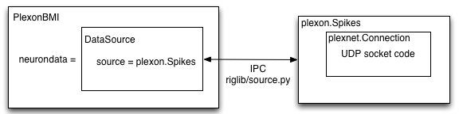

Often experiments involve a subject performing some stereotyped behavior while data are recorded. This library provides a flexible and generic way of incorporating all the datasources you could possibly want.
As this is a BMI library, streaming neural data from a neural recording system into a BMI task is an obvious requirement. The system diagram for the implementation of this functionality is below:
